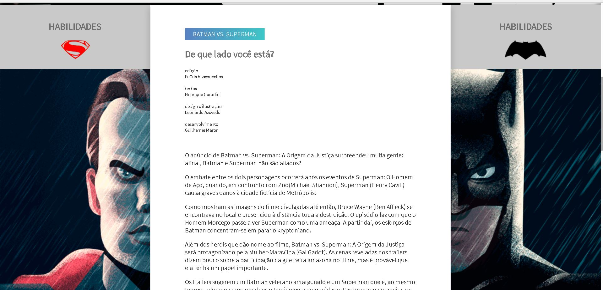
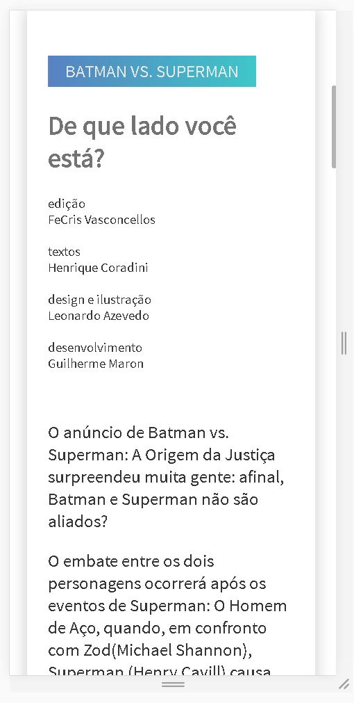
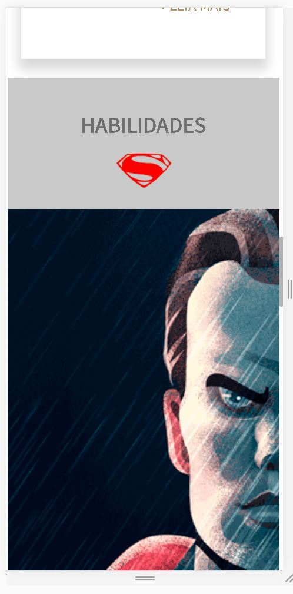
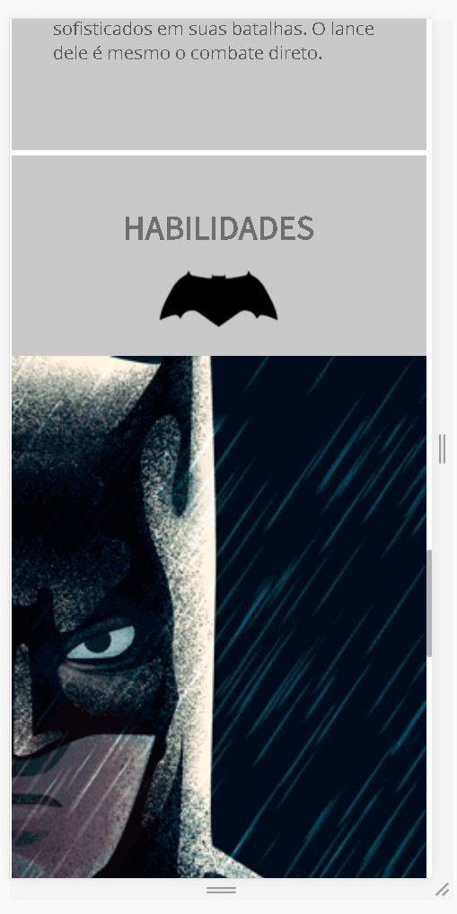
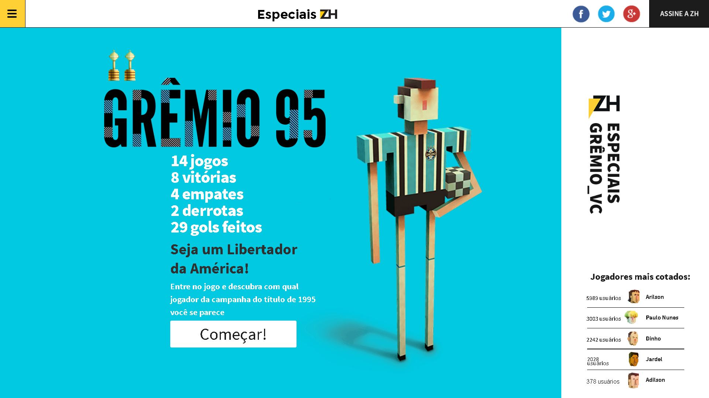

Exemplos de sites desenvolvidos com grids  Batman versus Superman: desktop  Batman versus Superman: mobile (1)  Batman versus Superman: mobile (2)  Batman versus Superman: mobile (3)  Grêmio 95: desktop Grêmio 95: mobile Frameworks que possuem sistemas de grid Bootstrap: http://getbootstrap.com/ Skeleton: http://getskeleton.com/ W3.css: https://www.w3schools.com/w3css/